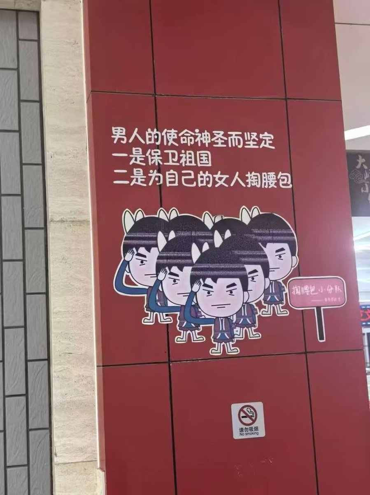

🌙艾丝尔娜·芙蕾琳🌙ᴹᴷ⁻ᴱᵐᵇᵉʳ
@AacerF59616
男娘并不算是跨女，大多数男娘属于性别表达为女性的顺性别男性，可能其中有一部分是尚处于认同探索早期的mtf或mtx。不过这些倒没那么重要，因为事实证明国内的激女群体就是无差别的厌恶任何指派性别为男的人，将其视为眼中钉，无论性别认同、性别表达和社会性别如何，只要指派为男那就默认敌对

拔累拔累
@cfgzb123
@AacerF59616 我也懒得争辩什么了，虽然我不是跨性别，但我也能理解跨性别了。可能中国真的存在种姓制度吧，有“婆罗门”，也有“不可接触者”。婆罗门的遗弃物都能被某些下等种姓疯狂的舔，而不可接触者的每一个细胞都会被嫌弃，都会被认定为是罪该万死的东西。下等种姓唯一的任务就是给高等种姓上贡，哎...... https://t.co/JhL3fB6qhF